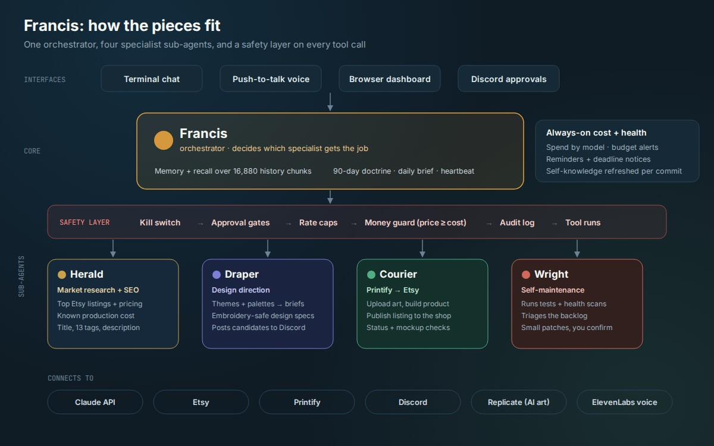

One orchestrator, four specialist sub-agents, and a safety layer that every tool call passes through.
In daily use
AI Agent Systems — Python
Francis — Multi-Agent AI Orchestrator
- 173 commits
- 680+ automated tests
- 4 sub-agents
- 14 numbered builds
- The Problem
- General-purpose chatbots forget everything between sessions, don't know how I actually make decisions, and can't safely take real actions like publishing a product or spending money. I wanted one assistant that remembers, reasons with my own track record, and hands off real work to specialists without going off the rails.
- The Solution
- I designed and built Francis, a personal AI agent in Python on the Claude API. I built it in 14 numbered builds, each with its own design, build and verification pass. Francis is the orchestrator. It holds long-term memory, a 90-day plan it filters work through, and a consistent personality. It delegates to four specialist sub-agents: Herald (market research and SEO copy), Draper (design direction), Courier (Printify and Etsy publishing) and Wright, which maintains Francis itself. Every tool call goes through a layered safety system: kill switch, approval gates, rate caps, a money guard and an audit log.
- Tech / Tools
- Python 3, Anthropic Claude API, pytest, Three.js dashboard, server-sent events, ElevenLabs speech, Discord bot API, Printify and Etsy APIs, Replicate, Pillow, NumPy vector index, git hooks, Windows Task Scheduler.
- The Impact
- Francis runs day to day across the terminal, voice and a browser dashboard. It is the engine behind my Etsy shop: the sub-agents have taken listings from niche research to live on Etsy with a single approval from me in Discord. It is covered by 680+ automated tests, and a test gate blocks any push that breaks them.
Full feature breakdown26 features
Orchestrator + sub-agents
- Sub-agent roster lives in a config file and reloads without a restart; each agent has its own prompt, tool allowlist and iteration limit
- Herald: pulls top Etsy listings and prices for a niche, checks real production cost, writes the SEO title, exactly 13 tags and the description
- Draper: turns Herald's themes and palettes into precise design briefs and embroidery-safe design specs, then sends them to Discord
- Courier: uploads artwork, creates the Printify product, publishes it to Etsy, and checks status and mockups (read-only checks need no confirmation)
- Wright: runs the test suite, repo health and git checks, compares the docs to the code, and applies small patches only after I confirm each one; key files are write-protected
- Agent factory designed (Francis proposes new specialists when a gap appears) and deliberately held until a fifth agent is needed
Memory + reasoning
- Recall over a 16,880-chunk index of my past AI conversations (5,791 entries), with a gate that treats recalled text as untrusted
- Memories are pulled out automatically at the end of each session, then de-duplicated and archived by a curation pass
- Self-knowledge doc (what files, tools and features exist) regenerates on every commit via a pre-commit hook
- Personality drift lock keeps the voice consistent across sessions
- Reasoning eval: a test set checks whether Francis's calls match my real decisions; mismatches were traced and fixed
- 90-day "north star" doctrine with dimensions and operating rules that every task is filtered through, plus a scheduled daily brief
Safety + cost control
- Kill switch that stops all tool execution instantly, checked before anything else
- Approval modes (off / smart / manual) plus a hardline blocklist that can't be turned off
- Per-tool rate caps (for example, publishing max 1 per hour and 4 per day) and a process-wide cap on model calls per minute
- Money guard: refuses any listing priced below known production cost, or any product type whose cost hasn't been verified
- Append-only audit log of every tool call; log redaction in debug mode
- Monthly budget watch with alerts at 50%, 80% and 100%;
/costshows spend by model and prompt-cache savings - Pre-commit secret scan, pre-push test gate, weekly dependency vulnerability scan, and an incident runbook
- Graceful degradation: if a service is down, Francis falls back to reduced features instead of failing outright
Interfaces
- Terminal chat with resume, debug mode (tokens, cache, latency, tool calls) and slash commands
- Push-to-talk voice mode with speech-to-text and spoken replies
- Local-only browser dashboard: animated Three.js orb, live sub-agent indicators, streaming chat, and panels for heartbeat, memory, cost and self-knowledge
- In-browser Allow/Deny cards for any action that needs confirmation, streamed live to the page
- Discord bridge: a bot checks a studio channel every minute and acts on replies such as "approve 2", "deny" or a pasted design edit
- Heartbeat: holds reminders and deadlines and surfaces quiet, dismissible notices at zero API cost